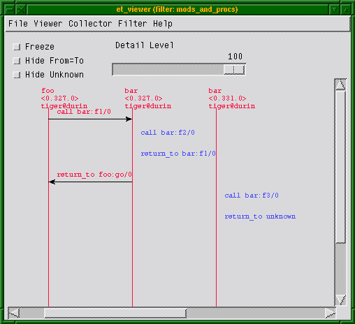
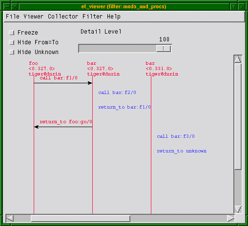

Trace Tool Builder
Introduction
Trace Tool Builder is a base for building trace tools for single node or distributed Erlang systems. It requires the Runtime_Tools application to be available on the traced node.
The following are the main features of Trace Tool Builder: * Start tracing to file ports on many nodes with one function call. * Write more information to a trace information file, which is read during formatting. * Restore previous configuration by maintaining a history buffer and handling configuration files. * Provide some simple support for sequential tracing. * Format binary trace logs and merge logs from multiple nodes.
The intention of Trace Tool Builder is to serve as a base for tailor-made trace tools, but it can also be used directly from the Erlang shell (it can mimic dbg behaviour while still providing useful additions, such as match specification shortcuts). Trace Tool Builder only allows the use of file port tracer, so to use other types of trace clients it is better to use dbg directly.
Getting Started
Module ttb is the interface to all functions in Trace Tool Builder.
To get started, the least you need to do is to start a tracer with ttb#tracer/0 , and set the required trace flags on the processes you want to trace with ttb#p/2 .
When the tracing is completed, stop the tracer with ttb#stop/0 and format the trace log with ttb#format/1 (if there is anything to format).
Useful functions:
<dt> ttb:tracer/0,1,2 </dt>
<dd>
Opens a trace port on each node to be traced. By default, trace messages are written to binary files on remote nodes (the binary trace log).
</dd>
<dt> ttb:p/2 </dt>
<dd>
Specifies the processes to be traced. Trace flags specified in this call specify what to trace on each process. This function can be called many times if you like different trace flags to be set on different processes.
</dd>
<dt> ttb:tp/2,3,4 or ttb:tpl/2,3,4 </dt>
<dd>
If you want to trace function calls (that is, if you have trace flag
call
set on any process), you must also set trace patterns on the required function(s) with
ttb#/0
or
ttb#/0
. A function is only traced if it has a trace pattern. The trace pattern specifies how to trace the function by using match specifications. Match specifications are described in the
ERTS User's Guide
.
</dd>
<dt> ttb:stop/0,1 </dt>
<dd>
Stops tracing on all nodes, deletes all trace patterns, and flushes the trace port buffer.
</dd>
<dt> ttb:format/1/2 </dt>
<dd>
Translates the binary trace logs into something readable. By default,
ttb
presents each trace message as a line of text, but you can also write your own handler to make more complex interpretations of the trace information. A trace log can also be presented graphically with application Event Tracer (ET).
If option
format
is specified to
ttb:stop/1
, the formatting is automatically done when stopping
ttb
.
</dd>
Tracing Local Node from Erlang Shell
The following small module is used in the subsequent example:
-module(m).
-export([f/0]).
f() ->
receive
From when is_pid(From) ->
Now = erlang:now(),
From ! {self(),Now}
end.
The following example shows the basic use of ttb from the Erlang shell. Default options are used both for starting the tracer and for formatting (the custom fetch directory is however provided). This gives a trace log named Node-ttb in the newly created directory, where Node is the node name. The default handler prints the formatted trace messages in the shell:
(tiger@durin)47> %% First I spawn a process running my test function
(tiger@durin)47>
Pid = spawn(m,f,[]).
<0.125.0>
(tiger@durin)48>
(tiger@durin)48> %% Then I start a tracer...
(tiger@durin)48>
ttb:tracer().
{ok,[tiger@durin]}
(tiger@durin)49>
(tiger@durin)49> %% and activate the new process for tracing
(tiger@durin)49> %% function calls and sent messages.
(tiger@durin)49>
ttb:p(Pid,[call,send]).
{ok,[{
<0.125.0>,[{matched,tiger@durin,1}]}]}
(tiger@durin)50>
(tiger@durin)50> %% Here I set a trace pattern on erlang:now/0
(tiger@durin)50> %% The trace pattern is a simple match spec
(tiger@durin)50> %% indicating that the return value should be
(tiger@durin)50> %% traced. Refer to the reference_manual for
(tiger@durin)50> %% the full list of match spec shortcuts
(tiger@durin)50> %% available.
(tiger@durin)51>
ttb:tp(erlang,now,return).
{ok,[{matched,tiger@durin,1},{saved,1}]}
(tiger@durin)52>
(tiger@durin)52> %% I run my test (i.e. send a message to
(tiger@durin)52> %% my new process)
(tiger@durin)52>
Pid ! self().
<0.72.0>
(tiger@durin)53>
(tiger@durin)53> %% And then I have to stop ttb in order to flush
(tiger@durin)53> %% the trace port buffer
(tiger@durin)53>
ttb:stop([return, {fetch_dir, "fetch"}]).
{stopped, "fetch"}
(tiger@durin)54>
(tiger@durin)54> %% Finally I format my trace log
(tiger@durin)54>
ttb:format("fetch").
({
<0.125.0>,{m,f,0},tiger@durin}) call erlang:now()
({
<0.125.0>,{m,f,0},tiger@durin}) returned from erlang:now/0 ->
{1031,133451,667611}
({
<0.125.0>,{m,f,0},tiger@durin}) <0.72.0> !
{
<0.125.0>,{1031,133451,667611}}
ok
Build Your Own Tool
The following example shows a simple tool for "debug tracing", that is, tracing of function calls with return values:
-module(mydebug).
-export([start/0,trc/1,stop/0,format/1]).
-export([print/4]).
%% Include ms_transform.hrl so that I can use dbg:fun2ms/2 to
%% generate match specifications.
-include_lib("stdlib/include/ms_transform.hrl").
%%% -------------Tool API-------------
%%% ----------------------------------
%%% Star the "mydebug" tool
start() ->
%% The options specify that the binary log shall be named
%% <Node>-debug_log and that the print/4 function in this
%% module shall be used as format handler
ttb:tracer(all,[{file,"debug_log"},{handler,{{?MODULE,print},0}}]),
%% All processes (existing and new) shall trace function calls
%% We want trace messages to be sorted upon format, which requires
%% timestamp flag. The flag is however enabled by default in ttb.
ttb:p(all,call).
%%% Set trace pattern on function(s)
trc(M) when is_atom(M) ->
trc({M,'_','_'});
trc({M,F}) when is_atom(M), is_atom(F) ->
trc({M,F,'_'});
trc({M,F,_A}=MFA) when is_atom(M), is_atom(F) ->
%% This match spec shortcut specifies that return values shall
%% be traced.
MatchSpec = dbg:fun2ms(fun(_) -> return_trace() end),
ttb:tpl(MFA,MatchSpec).
%%% Format a binary trace log
format(Dir) ->
ttb:format(Dir).
%%% Stop the "mydebug" tool
stop() ->
ttb:stop(return).
%%% --------Internal functions--------
%%% ----------------------------------
%%% Format handler
print(_Out,end_of_trace,_TI,N) ->
N;
print(Out,Trace,_TI,N) ->
do_print(Out,Trace,N),
N+1.
do_print(Out,{trace_ts,P,call,{M,F,A},Ts},N) ->
io:format(Out,
"~w: ~w, ~w:~n"
"Call : ~w:~w/~w~n"
"Arguments :~p~n~n",
[N,Ts,P,M,F,length(A),A]);
do_print(Out,{trace_ts,P,return_from,{M,F,A},R,Ts},N) ->
io:format(Out,
"~w: ~w, ~w:~n"
"Return from : ~w:~w/~w~n"
"Return value :~p~n~n",
[N,Ts,P,M,F,A,R]).
To distinguish trace logs produced with this tool from other logs, option file is used in ttb#tracer/2 . The logs are therefore fetched to a directory named ttb_upload_debug_log-YYYYMMDD-HHMMSS
By using option handler when starting the tracer, the information about how to format the file is stored in the trace information file ( .ti ). This is not necessary, as it can be specified when formatting instead. However, It can be useful if you, for example, want to format trace logs automatically using option format in ttb:stop/1 . Also, you do not need any knowledge of the content of a binary log to format it the way it is intended. If option handler is specified both when starting the tracer and when formatting, the one specified when formatting is used.
Trace flag call is set on all processes. This means that any function activated with command trc/1 is traced on all existing and new processes.
Running Trace Tool Builder against Remote Node
The Observer application might not always be available on the node to be traced (in the following called the "traced node"). However, Trace Tool Builder can still be run from another node (in the following called the "trace control node") as long as the following is fulfilled: * The Observer application is available on the trace control node. * The Runtime_Tools application is available on both the trace control node and the traced node.
If Trace Tool Builder is to be used against a remote node, it is highly recommended to start the trace control node as hidden . This way it can connect to the traced node without being "seen" by it, that is, if the nodes() BIF is called on the traced node, the trace control node does not show. To start a hidden node, add option -hidden to the erl command, for example:
% erl -sname trace_control -hidden
Diskless Node
If the traced node is diskless, ttb must be started from a trace control node with disk access, and option file must be specified to function tracer/2 with value {local, File} , for example:
(trace_control@durin)1>
ttb:tracer(mynode@diskless, {file,{local,{wrap,"mytrace"}}}).
{ok,[mynode@diskless]}
More Tracing Options
When setting up a trace, the following features can also be activated: * Time-constrained tracing * Overload protection * Autoresume * dbg mode
Time-Constrained Tracing
It can sometimes be helpful to enable trace for a specified period of time (for example, to monitor a system for 24 hours or half a second). This can be done with option {timer, TimerSpec} . If TimerSpec has the form of MSec , the trace is stopped after MSec milliseconds using ttb#stop/0 . If more options are provided ( TimerSpec = {MSec, Opts} ), ttb#stop/1 is called instead with Opts as argument.
The timer is started with ttb#p/2 , so any trace patterns must be set up in advance. ttb#start_trace/4 always sets up all patterns before invoking ttb:p/2 .
The following example shows how to set up a trace that is automatically stopped and formatted after 5 seconds:
(tiger@durin)1>
ttb:start_trace([node()], [{erlang, now,[]}], {all, call}, [{timer, {5000, format}}]).
Note
Because of network and processing delays, the period of tracing is approximate.
Overload Protection
When tracing live systems, always take special care to not overload a node with too heavy tracing. ttb provides option overload to address this problem.
{overload, MSec, Module, Function} instructs the ttb back end (a part of the Runtime_Tools application) to perform overload check every MSec millisecond. If the check (named Module:Function(check) ) returns true , tracing is disabled on the selected node.
Overload protection activated on one node does not affect other nodes, where the tracing continues as normal. ttb:stop/0,1 fetches data from all clients, including everything collected before the activation of overload protection.
Note
It is not allowed to change trace details (with ttb:p and ttb:tp/tpl... ) once overload protection is activated in one of the traced nodes. This is to avoid trace setup being inconsistent between nodes.
Module:Function provided with option overload must handle three calls: init , check , and stop . init and stop allow some setup and teardown required by the check. An overload check module can look as follows:
-module(overload).
-export([check/1]).
check(init) ->
Pid = sophisticated_module:start(),
put(pid, Pid);
check(check) ->
get(pid) ! is_overloaded,
receive
Reply ->
Reply
after 5000 ->
true
end;
check(stop) ->
get(pid) ! stop.
Note
check is always called by the same process, so put and get are possible.
Autoresume
A node can crash (probably a buggy one, hence traced). Use resume to resume tracing on the node automatically when it gets back. The failing node then tries to reconnect to trace control node when Runtime_Tools is started. This implies that Runtime_Tools must be included in the startup chain of other nodes (if not, you can still resume tracing by starting Runtime_Tools manually, that is, by an RPC call).
To not lose the data that the failing node stored up to the point of crash, the control node tries to fetch it before restarting trace. This must occur within the allowed time frame, otherwise it is aborted (default is 10 seconds, but it can be changed with {resume, MSec} ). The data fetched this way is then merged with all other traces.
The autostart feature requires more data to be stored on traced nodes. By default, the data is stored automatically to the file named "ttb_autostart.bin" in the currect working directory (cwd) of the traced node. Users can change this behaviour (that is, on diskless nodes) by specifying their own module to handle autostart data storage and retrieval ( ttb_autostart_module environment variable of runtime_tools ). For information about the API, see module ttb . The following example shows the default handler:
-module(ttb_autostart).
-export([read_config/0,
write_config/1,
delete_config/0]).
-define(AUTOSTART_FILENAME, "ttb_autostart.bin").
delete_config() ->
file:delete(?AUTOSTART_FILENAME).
read_config() ->
case file:read_file(?AUTOSTART_FILENAME) of
{ok, Data} -> {ok, binary_to_term(Data)};
Error -> Error
end.
write_config(Data) ->
file:write_file(?AUTOSTART_FILENAME, term_to_binary(Data)).
Note
Remember that file trace ports buffer the data by default. If the node crashes, trace messages are not flushed to the binary log. If the risk of failure is high, it can be a good idea to flush the buffers every now and then automatically. Passing {flush, MSec} as an option of ttb:tracer/2 flushes all buffers every MSec millisecond.
dbg Mode
Option {shell, ShellType} allows making ttb operation similar to runtime_tools/dbg . Using {shell, true} displays all trace messages in the shell before storing them. {shell, only} additionally disables message storage (making the tool to behave exactly like dbg ). This is allowed only with IP trace ports ( {trace, {local, File}} ).
Command ttb:tracer(dbg) is a shortcut for the pure dbg mode ( {shell, only} ). trace_info
Trace Information and File .ti
In addition to the trace log file(s), a file with extension .ti is created when Trace Tool Builder is started. This is the trace information file. It is a binary file, which contains the process information, trace flags used, the name of the node to which it belongs, and all information written with function ttb#write_trace_info/2 . .ti files are always fetched with other logs when the trace is stopped.
Except for the process information, everything in the trace information file is passed on to the handler function when formatting. Parameter TI is a list of {Key,ValueList} tuples. The keys flags , handler , file , and node are used for information written directly by ttb .
Information to the trace information file by can be added by calling ttb#write_trace_info/2 . Notice that ValueList always is a list, and if you call write_trace_info/2 many times with the same Key , the ValueList is extended with a new value each time.
Example:
ttb:write_trace_info(mykey,1) gives the entry {mykey,[1]} in TI . Another call, ttb:write_trace_info(mykey,2) , changes this entry to {mykey,[1,2]} .
Wrap Logs
If you want to limit the size of the trace logs, you can use wrap logs. This works almost like a circular buffer. You can specify the maximum number of binary logs and the maximum size of each log. ttb then creates a new binary log each time a log reaches the maximum size. When the maximum number of logs are reached, the oldest log is deleted before a new one is created.
Note
The overall size of data generated by ttb can be greater than the wrap specification suggests. If a traced node restarts and autoresume is enabled, the old wrap log is always stored and a new one is created.
Wrap logs can be formatted one by one or all at once. See Formatting . format
Formatting
Formatting can be done automatically when stopping ttb (see section Automatically Collect and Format Logs from All Nodes ), or explicitly by calling function ttb:format/1,2 .
Formatting means to read a binary log and present it in a readable format. You can use the default format handler in ttb to present each trace message as a line of text, or write your own handler to make more complex interpretations of the trace information. You can also use application ET to present the trace log graphically (see section Presenting Trace Logs with Event Tracer ).
The first argument to ttb:format/1,2 specifies which binary log(s) to format. This is usually the name of a directory that ttb created during log fetch. Unless option disable_sort is provided, the logs from different files are always sorted according to time-stamp in traces.
The second argument to ttb:format/2 is a list of options as follows:
<dt> out </dt>
<dd>
Specifies the destination to write the formatted text. Default destination is
standard_io
, but a filename can also be specified.
</dd>
<dt> handler </dt>
<dd>
Specifies the format handler to use. If this option is not specified, option
handler
that is specified when starting the tracer is used. If option
handler
is not specified when starting the tracer either, a default handler is used, which prints each trace message as a text line.
</dd>
<dt> disable_sort </dt>
<dd>
Indicates that the logs are not to be merged according to time-stamp, but processed one file after another (this can be a bit faster).
</dd>
A format handler is a fun taking four arguments. This fun is called for each trace message in the binary log(s). A simple example that only prints each trace message can be as follows:
fun(Fd, Trace, _TraceInfo, State) ->
io:format(Fd, "Trace: ~p~n", [Trace]),
State
end.
Here, Fd is the file descriptor for the destination file, or the atom standard_io . _TraceInfo contains information from the trace information file (see section Trace Information and File .ti ). State is a state variable for the format handler fun. The initial value of variable State is specified with the handler option, for example:
ttb:format("tiger@durin-ttb", [{handler, {{Mod,Fun}, initial_state}}])
^^^^^^^^^^^^^
Another format handler can be used to calculate the time spent by the garbage collector:
fun(_Fd,{trace_ts,P,gc_start,_Info,StartTs},_TraceInfo,State) ->
[{P,StartTs}|State];
(Fd,{trace_ts,P,gc_end,_Info,EndTs},_TraceInfo,State) ->
{value,{P,StartTs}} = lists:keysearch(P,1,State),
Time = diff(StartTs,EndTs),
io:format("GC in process ~w: ~w milliseconds~n", [P,Time]),
State -- [{P,StartTs}]
end
A more refined version of this format handler is function handle_gc/4 in module multitrace.erl included in directory src of the Observer application.
The trace message is passed as the second argument ( Trace ). The possible values of Trace are the following: * All trace messages described in erts/erlang#trace/3 * {drop, N} if IP tracer is used (see runtime_tools/dbg#trace_port/2 ) * end_of_trace received once when all trace messages are processed
By giving the format handler ttb#get_et_handler/0 , you can have the trace log presented graphically with et_viewer in the ET application (see section Presenting Trace Logs with Event Tracer ).
You can always decide not to format the whole trace data contained in the fetch directory, but analyze single files instead. To do so, a single file (or list of files) must be passed as the first argument to format/1,2 .
Wrap logs can be formatted one by one or all at once. To format one of the wrap logs in a set, specify the exact file name. To format the whole set of wrap logs, specify the name with
instead of the wrap count.
Example:
Start tracing:
(tiger@durin)1> ttb:tracer(node(),{file,{wrap,"trace"}}).
{ok,[tiger@durin]}
(tiger@durin)2> ttb:p(...)
...
This gives a set of binary logs, for example:
tiger@durin-trace.0.wrp
tiger@durin-trace.1.wrp
tiger@durin-trace.2.wrp
...
Format the whole set of logs:
1> ttb:format("tiger@durin-trace.*.wrp").
....
ok
2>
Format only the first log:
1> ttb:format("tiger@durin-trace.0.wrp").
....
ok
2>
To merge all wrap logs from two nodes:
1>
ttb:format(["tiger@durin-trace.*.wrp","lion@durin-trace.*.wrp"]).
....
ok
2>
Presenting Trace Logs with Event Tracer
For detailed information about the Event Tracer, see the ET application.
By giving the format handler ttb#get_et_handler/0 , you can have the trace log presented graphically with et_viewer in the ET application. ttb provides filters that can be selected from the menu Filter in the et_viewer window. The filters are names according to the type of actors they present (that is, what each vertical line in the sequence diagram represents). Interaction between actors is shown as red arrows between two vertical lines, and activities within an actor are shown as blue text to the right of the actors line.
The processes filter is the only filter showing all trace messages from a trace log. Each vertical line in the sequence diagram represents a process. Erlang messages, spawn, and link/unlink are typical interactions between processes. Function calls, scheduling, and garbage collection, are typical activities within a process. processes is the default filter.
The remaining filters only show function calls and function returns. All other trace message are discarded. To get the most out of these filters, et_viewer must know the caller of each function and the time of return. This can be obtained using both the call and return_to flags when tracing. Notice that flag return_to only works with local call trace, that is, when trace patterns are set with ttb:tpl .
The same result can be obtained by using the flag call only and setting a match specification on local or global function calls as follows:
1> dbg:fun2ms(fun(_) -> return_trace(),message(caller()) end).
[{'_',[],[{return_trace},{message,{caller}}]}]
This must however be done with care, as function {return_trace} in the match specification destroys tail recursiveness.
The modules filter shows each module as a vertical line in the sequence diagram. External function calls/returns are shown as interactions between modules, and internal function calls/returns are shown as activities within a module.
The functions filter shows each function as a vertical line in the sequence diagram. A function calling itself is shown as an activity within a function, and all other function calls are shown as interactions between functions.
The mods_and_procs and funcs_and_procs filters are equivalent to the modules and functions filters respectively, except that each module or function can have many vertical lines, one for each process it resides on.
In the following example, modules foo and bar are used:
-module(foo).
-export([start/0,go/0]).
start() ->
spawn(?MODULE, go, []).
go() ->
receive
stop ->
ok;
go ->
bar:f1(),
go()
end.
-module(bar).
-export([f1/0,f3/0]).
f1() ->
f2(),
ok.
f2() ->
spawn(?MODULE,f3,[]).
f3() ->
ok.
Setting up the trace:
(tiger@durin)1> %%First we retrieve the Pid to limit traced processes set
(tiger@durin)1>
Pid = foo:start().
(tiger@durin)2> %%Now we set up tracing
(tiger@durin)2>
ttb:tracer().
(tiger@durin)3>
ttb:p(Pid, [call, return_to, procs, set_on_spawn]).
(tiger@durin)4> ttb:tpl(bar, []).
(tiger@durin)5> %%Invoke our test function and see output with et viewer
(tiger@durin)5>
Pid ! go.
(tiger@durin)6>
ttb:stop({format, {handler, ttb:get_et_handler()}}).
This renders a result similar to the following:
 

Notice that function ttb#start_trace/4 can be used as help as follows:
(tiger@durin)1> Pid = foo:start().
(tiger@durin)2>
ttb:start_trace([node()], [{bar,[]}], {Pid, [call, return_to, procs, set_on_spawn]} {handler, ttb:get_et_handler()}).
(tiger@durin)3> Pid ! go.
(tiger@durin)4> ttb:stop(format).
Automatically Collect and Format Logs from All Nodes
By default, ttb#stop/1 fetches trace logs and trace information files from all nodes. The logs are stored in a new directory named ttb_upload-Filename-Timestamp under the working directory of the trace control node. Fetching can be disabled by providing option nofetch to ttb:stop/1 . The user can specify a fetch directory by passing option {fetch_dir, Dir} .
If option format is specified to ttb:stop/1 , the trace logs are automatically formatted after tracing is stopped.
History and Configuration Files
For the tracing functionality, runtime_tools/dbg can be used instead of ttb for setting trace flags on processes and trace patterns for call trace, that is, the functions p , tp , tpl , ctp , ctpl , and ctpg . Only the following two things are added by ttb for these functions: * All calls are stored in the history buffer and can be recalled and stored in a configuration file. This makes it easy to set up the same trace environment, for example, if you want to compare two test runs. It also reduces the amount of typing when using ttb from the Erlang shell. * Shortcuts are provided for the most common match specifications (to not force you to use runtime_tools/dbg#fun2ms/1 continually).
Use ttb#list_history/0 to see the content of the history buffer and ttb#run_history/1 to re-execute one of the entries.
The main purpose of the history buffer is the possibility to create configuration files. Any function stored in the history buffer can be written to a configuration file and used for creating a specific configuration at any time with a single function call.
A configuration file is created or extended with ttb#write_config/2 . Configuration files are binary files and can therefore only be read and written with functions provided by ttb .
The complete content of the history buffer can be written to a configuration file by calling ttb:write_config(ConfigFile,all) . Selected entries from the history can be written by calling ttb:write_config(ConfigFile,NumList) , where NumList is a list of integers pointing out the history entries to write. Moreover, the history buffer is always dumped to ttb_last_config when ttb:stop/0,1 is called.
User-defined entries can also be written to a configuration file by calling function ttb:write_config(ConfigFile,ConfigList) , where ConfigList is a list of {Module,Function,Args} .
Any existing file ConfigFile is deleted and a new file is created when write_config/2 is called. Option append can be used to add something at the end of an existing configuration file, for example, ttb:write_config(ConfigFile,What,[append]) .
Example:
See the content of the history buffer:
(tiger@durin)191> ttb:tracer().
{ok,[tiger@durin]}
(tiger@durin)192>
ttb:p(self(),[garbage_collection,call]).
{ok,{[
<0.1244.0>],[garbage_collection,call]}}
(tiger@durin)193>
ttb:tp(ets,new,2,[]).
{ok,[{matched,1}]}
(tiger@durin)194>
ttb:list_history().
[{1,{ttb,tracer,[tiger@durin,[]]}},
{2,{ttb,p,[
<0.1244.0>,[garbage_collection,call]]}},
{3,{ttb,tp,[ets,new,2,[]]}}]
Execute an entry from the history buffer:
(tiger@durin)195> ttb:ctp(ets,new,2).
{ok,[{matched,1}]}
(tiger@durin)196> ttb:list_history().
[{1,{ttb,tracer,[tiger@durin,[]]}},
{2,{ttb,p,[
<0.1244.0>,[garbage_collection,call]]}},
{3,{ttb,tp,[ets,new,2,[]]}},
{4,{ttb,ctp,[ets,new,2]}}]
(tiger@durin)197>
ttb:run_history(3).
ttb:tp(ets,new,2,[]) ->
{ok,[{matched,1}]}
Write the content of the history buffer to a configuration file:
(tiger@durin)198> ttb:write_config("myconfig",all).
ok
(tiger@durin)199> ttb:list_config("myconfig").
[{1,{ttb,tracer,[tiger@durin,[]]}},
{2,{ttb,p,[
<0.1244.0>,[garbage_collection,call]]}},
{3,{ttb,tp,[ets,new,2,[]]}},
{4,{ttb,ctp,[ets,new,2]}},
{5,{ttb,tp,[ets,new,2,[]]}}]
Extend an existing configuration:
(tiger@durin)200>
ttb:write_config("myconfig",[{ttb,tp,[ets,delete,1,[]]}], [append]).
ok
(tiger@durin)201> ttb:list_config("myconfig").
[{1,{ttb,tracer,[tiger@durin,[]]}},
{2,{ttb,p,[
<0.1244.0>,[garbage_collection,call]]}},
{3,{ttb,tp,[ets,new,2,[]]}},
{4,{ttb,ctp,[ets,new,2]}},
{5,{ttb,tp,[ets,new,2,[]]}},
{6,{ttb,tp,[ets,delete,1,[]]}}]
Go back to a previous configuration after stopping Trace Tool Builder:
(tiger@durin)202> ttb:stop().
ok
(tiger@durin)203>
ttb:run_config("myconfig").
ttb:tracer(tiger@durin,[]) ->
{ok,[tiger@durin]}
ttb:p(
<0.1244.0>,[garbage_collection,call]) ->
{ok,{[
<0.1244.0>],[garbage_collection,call]}}
ttb:tp(ets,new,2,[]) ->
{ok,[{matched,1}]}
ttb:ctp(ets,new,2) ->
{ok,[{matched,1}]}
ttb:tp(ets,new,2,[]) ->
{ok,[{matched,1}]}
ttb:tp(ets,delete,1,[]) ->
{ok,[{matched,1}]}
ok
Write selected entries from the history buffer to a configuration file:
(tiger@durin)204> ttb:list_history().
[{1,{ttb,tracer,[tiger@durin,[]]}},
{2,{ttb,p,[
<0.1244.0>,[garbage_collection,call]]}},
{3,{ttb,tp,[ets,new,2,[]]}},
{4,{ttb,ctp,[ets,new,2]}},
{5,{ttb,tp,[ets,new,2,[]]}},
{6,{ttb,tp,[ets,delete,1,[]]}}]
(tiger@durin)205>
ttb:write_config("myconfig",[1,2,3,6]).
ok
(tiger@durin)206>
ttb:list_config("myconfig").
[{1,{ttb,tracer,[tiger@durin,[]]}},
{2,{ttb,p,[
<0.1244.0>,[garbage_collection,call]]}},
{3,{ttb,tp,[ets,new,2,[]]}},
{4,{ttb,tp,[ets,delete,1,[]]}}]
(tiger@durin)207>
Sequential Tracing
To learn what sequential tracing is and how it can be used, see the Reference Manual for kernel/seq_trace .
The support for sequential tracing provided by Trace Tool Builder includes the following: * Initiation of the system tracer. This is automatically done when a trace port is started with ttb#tracer/0 . * Creation of match specifications that activates sequential tracing.
Starting sequential tracing requires that a tracer is started with function ttb:tracer/0,1,2 . Sequential tracing can then be started in either of the following ways: * Through a trigger function with a match specification created with ttb#seq_trigger_ms/0 . * Directly by using module kernel/seq_trace .
Example 1:
In the following example, function dbg:get_tracer/0 is used as trigger for sequential tracing:
(tiger@durin)110> ttb:tracer().
{ok,[tiger@durin]}
(tiger@durin)111> ttb:p(self(),call).
{ok,{[ <0.158.0>],[call]}}
(tiger@durin)112>
ttb:tp(dbg,get_tracer,0,ttb:seq_trigger_ms(send)).
{ok,[{matched,1},{saved,1}]}
(tiger@durin)113>
dbg:get_tracer(), seq_trace:reset_trace().
true
(tiger@durin)114> ttb:stop(format).
({
<0.158.0>,{shell,evaluator,3},tiger@durin}) call dbg:get_tracer()
SeqTrace [0]: ({
<0.158.0>,{shell,evaluator,3},tiger@durin})
{
<0.237.0>,dbg,tiger@durin} ! {
<0.158.0>,{get_tracer,tiger@durin}}
[Serial: {0,1}]
SeqTrace [0]: ({
<0.237.0>,dbg,tiger@durin})
{
<0.158.0>,{shell,evaluator,3},tiger@durin} ! {dbg,{ok,#Port
<0.222>}}
[Serial: {1,2}]
ok
(tiger@durin)116>
Example 2:
Starting sequential tracing with a trigger is more useful if the trigger function is not called directly from the shell, but rather implicitly within a larger system. When calling a function from the shell, it is simpler to start sequential tracing directly, for example, as follows:
(tiger@durin)116> ttb:tracer().
{ok,[tiger@durin]}
(tiger@durin)117>
seq_trace:set_token(send,true), dbg:get_tracer(), seq_trace:reset_trace().
true
(tiger@durin)118> ttb:stop(format).
SeqTrace [0]: ({
<0.158.0>,{shell,evaluator,3},tiger@durin})
{
<0.246.0>,dbg,tiger@durin} ! {
<0.158.0>,{get_tracer,tiger@durin}}
[Serial: {0,1}]
SeqTrace [0]: ({
<0.246.0>,dbg,tiger@durin})
{
<0.158.0>,{shell,evaluator,3},tiger@durin} ! {dbg,{ok,#Port
<0.229>}}
[Serial: {1,2}]
ok
(tiger@durin)120>
In both previous examples, seq_trace:reset_trace/0 resets the trace token immediately after the traced function to avoid many trace messages because of the printouts in the Erlang shell.
All functions in module seq_trace , except set_system_tracer/1 , can be used after the trace port is started with ttb:tracer/0,1,2 .
Multipurpose Trace Tool
Module multitrace in directory src of the Observer application provides a small tool with three possible trace settings. The trace messages are written to binary files, which can be formatted with function multitrace:format/1,2 :
<dt> multitrace:debug(What) </dt>
<dd>
Start calltrace on all processes and trace the specified function(s). The format handler used is
multitrace:handle_debug/4
that prints each call and returns.
What
must be an item or a list of items to trace, specified on the format
{Module,Function,Arity}
,
{Module,Function}
, or only
Module
.
</dd>
<dt> multitrace:gc(Procs) </dt>
<dd>
Trace garbage collection on the specified process(es). The format handler used is
multitrace:handle_gc/4
that prints start, stop, and the time spent for each garbage collection.
</dd>
<dt> multitrace:schedule(Procs) </dt>
<dd>
Trace in-scheduling and out-scheduling on the specified process(es). The format handler used is
multitrace:handle_schedule/4
that prints each in-scheduling and out-scheduling with process, time-stamp, and current function. It also prints the total time each traced process was scheduled in.
</dd>